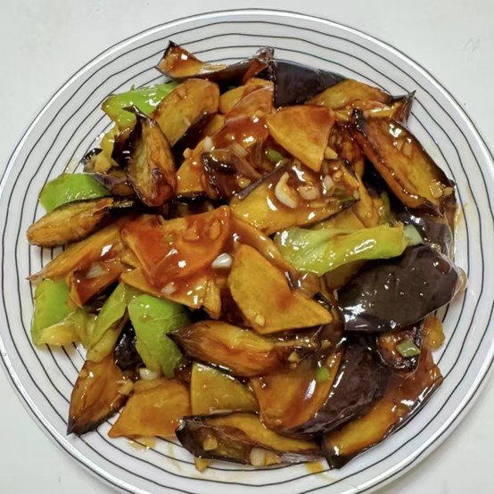
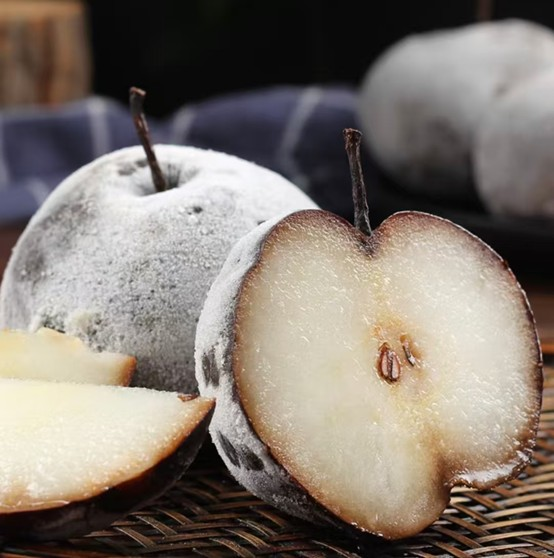

锅包肉
🔴简介：锅包肉（英文名：Fried Pork in
Scoop），原名锅爆肉，光绪年间始创自哈尔滨道台府府尹杜学瀛厨师郑兴文之手。锅包肉是为适应外宾口味，把咸鲜口味的“焦烧肉条”改成了一道酸甜口味的菜肴。成菜后，色泽金黄，口味酸甜。2022年，哈尔滨锅包肉入选国家《地标美食名录》。
🔴做法：①猪里脊肉切成薄片，用盐、料酒腌制。②土豆淀粉加水泡好，倒掉上层清水后，加少许油，放入肉片挂糊。③锅中倒油，七成热时逐片下入肉片，中小火炸至微黄捞出。④待油温升高后，复炸肉片20-30秒，快速捞出。⑤锅留底油，爆香葱丝、姜丝、蒜片，倒入白糖、米醋、生抽、香油调好的料汁，煮至浓稠，放入胡萝卜丝和香菜段。⑥下入炸好的肉片快速翻炒均匀，淋油出锅。
🔴起源：清朝，旗人郑兴文1907年到哈尔滨滨江道衙门当官厨，给道台杜学瀛料理膳食。道台府里经常会宴请国外宾客，尤其是俄罗斯客人。由于外国人喜欢吃甜酸口味。杜学瀛就命府内厨师变换菜肴口味。郑兴文就把原来咸鲜口味的“焦烧肉条”改成了酸甜口味的菜肴，这一改使哈尔滨成为锅包肉的起源地。锅包肉这道菜深得俄罗斯客人喜爱，由于用急火快炒，把铁锅烧热，把汁淋到锅里，浸透到肉里，所以起名叫“锅爆肉”。俄罗斯人发“爆”音为包，时间一长，“锅爆肉”就演变成为“锅包肉”。
地三鲜
🔴简介：
东北地三鲜是一道极具代表性的东北菜，主要食材为茄子、土豆和青椒，这三种食材搭配在一起，营养丰富，口感多样。茄子软糯，土豆绵密，青椒脆爽，整道菜色泽诱人，味道浓郁，咸香可口，是东北家庭餐桌上的常客，也深受各地食客喜爱。
🔴做法：①茄子土豆去皮切块，青椒洗净切小块，葱姜蒜切末。②调汁，碗中加入生抽、蚝油、白糖、盐、鸡精和适量清水，再加入1勺淀粉搅拌均匀。③土豆块放入清水中浸泡，捞出沥干水分。茄子块用盐腌制10分钟挤出水分。④锅中多倒些油，油热后放入土豆块炸至表面金黄，捞出。再放入茄子块炸软捞出。⑤锅中留少许底油，放入葱、姜、蒜末爆香，加入青椒块翻炒至断生。⑥倒入炸好的土豆和茄子，翻炒均匀，淋入碗汁，翻炒至汤汁浓稠即可。
🔴来源:地三鲜的来源有多种说法
①与古代“尝三鲜”习俗相关:我国古代民间有“立夏尝三鲜”的习俗，三鲜分为“地三鲜”“树三鲜”和“水三鲜”。其中“地三鲜”最初指的是苋菜、元麦和蚕豆。后来这一习俗传到东北，当地的土豆、茄子和辣椒成为了新的“地三鲜”，并被炒在一起，因其味道独特，逐渐成为东北的名菜。
②起源于清朝末年:有说法认为，东北地三鲜最早诞生于辽宁锦州。在清朝末年，东北百姓生活艰苦，为了填饱肚子，人们利用当地盛产的土豆、茄子和辣椒等食材，探索出了新的烹饪方法，地三鲜便应运而生。
③还有一种说法称:清朝年间，一位巡视东北的大臣发现当地百姓饮食单调，于是举办了一场菜肴大赛。当地百姓用土豆、茄子和青椒烹制出了一道美味佳肴，这道菜后来被称为地三鲜。

冻梨
🔴简介：
东北冻梨是一种独特的冬季美食。冻梨的制作过程非常简单，但需要借助东北地区极低的自然气温。通常选用花盖梨、秋白梨或白梨等品种，将成熟的梨放置在户外低温环境中反复冷冻和解冻，经过数天甚至数周的时间，梨的表皮会变得乌黑发亮，而内部果肉则变得细腻多汁。冻梨的口感独特，甜而不腻，酸甜适中，冰凉沁心，是东北冬季不可或缺的美食。
🔴起源：东北冻梨的历史可以追溯到一千多年前的辽代。据文献记载，契丹人早在辽代就有将梨子放在户外用冰雪覆盖进行冷冻的习惯。北宋使臣庞元英在《文昌杂录》中提到，他在出使辽国时尝到了这种经过冷冻的梨。这种古老的储存方式不仅延长了梨的保质期，还让梨在解冻后呈现出独特的风味，逐渐演变成一种独特的食品加工方法。
